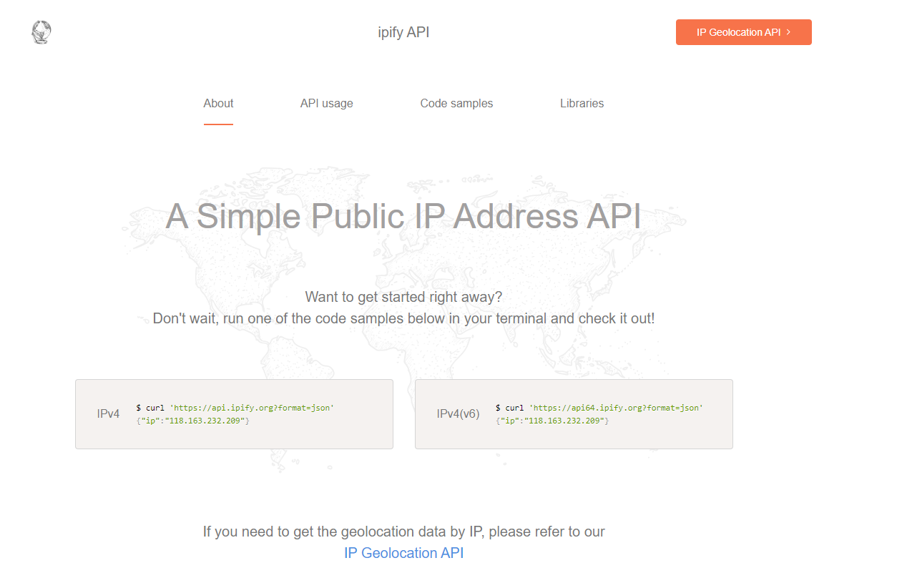
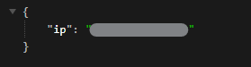

有些情境可能會需要客戶端的IP來做事，例如:log等，一般作法會建議自己撰寫後端程式來解析獲得IP位置，但還有另一方法可以更快取得IP！
這邊我們會使用第三方開源取得IP服務ipify的API 來快速取得IP。

照官方的範例，將此段貼至網頁的網址….結束
1
|
https://api.ipify.org?format=json
|

看到這邊會發現挖塞也太快了
接下來讓我們在Angular實作
使用Fetch 呼叫API (Fetch 預設使用GET呼叫)
1
2
3
4
5
6
7
8
9
10
11
12
13
14
15
16
17
18
19
20
21
|
import { Injectable } from '@angular/core';
@Injectable({
providedIn: 'root',
})
export class IPService {
constructor() {}
async getIPv4(): Promise<string> {
return new Promise((resolve) => {
fetch('https://api.ipify.org/?format=json')
.then((response) => {
if (response.ok) return response.json();
throw new Error('Network response was not ok.');
})
.then((data) => resolve(data.ip))
.catch((err) => resolve('not found'));
});
}
}
|
過來只要在要使用的地方建構注入IPService即可！
1
2
3
4
5
6
7
8
9
10
|
public ipAddress: string;
constructor(
private IPService: IPService,
) {}
async ngOnInit(): Promise<void> {
// 取得 IP
this.ipAddress = await this.IPService.getIPv4();
}
|
iptify